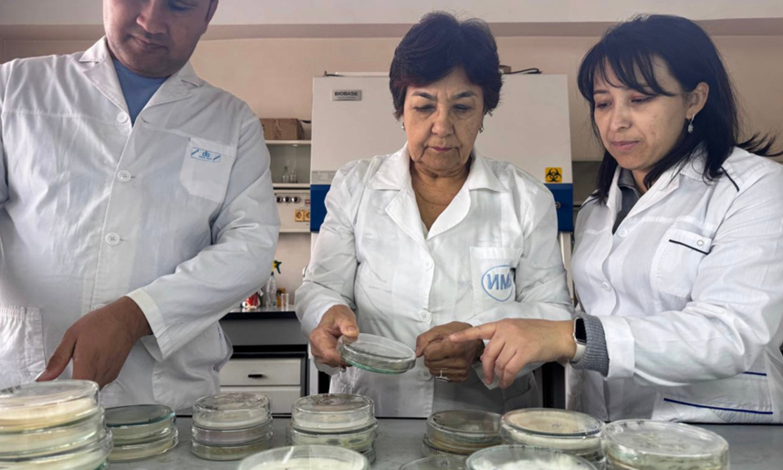

Производство биологически активного удобрения (BAF)
О проекте
Проект направлен на организацию производства высококачественного биологически активного удобрения (BAF) на основе переработки растительных отходов и использования локальных эффективных штаммов микроорганизмов.
Организация-грантополучатель
ООО «PRINT»
Официальное название
Производство биологически активного удобрения (BAF)
Код проекта
BIRD-01/49
Руководитель проекта
Дмитрий Пастухов
Проблема и решение
Решаемые проблемы
- Деградация сельскохозяйственных земель в Узбекистане: содержание гумуса менее 2%
- Низкая урожайность и ухудшение качества сельхозпродукции
- Неэффективность традиционных методов (минеральные удобрения усугубляют истощение почвы)
Цель проекта
Организация производства высококачественного биологически активного удобрения (BAF) на основе переработки растительных отходов и использования локальных эффективных штаммов микроорганизмов.
Технологическое решение
Производство экологичного BAF, которое уменьшает потребность в азотных и калийных удобрениях на 40-50%, полностью исключает потребность в фосфорных удобрениях, улучшает удержание влаги в почве и обладает длительным положительным эффектом.
Ключевые особенности:
- Технология защищена патентом № IAP 04377
- Использование специально подобранных штаммов микроорганизмов
- Снижение потребности в азотных и калийных удобрениях на 40-50%
- Полное исключение потребности в фосфорных удобрениях
- Улучшение удержания влаги в почве
- Длительный положительный эффект на плодородие почвы
Текущий статус проекта
Производство
Производство гуматов и компоста организовано на площадке ООО «PRINT»
Лицензирование
Подписан лицензионный договор о праве использования патента
Инфраструктура
Готовность помещений для установки оборудования
Планы по развитию
Исследования и доработки
Разработка новых штаммов микроорганизмов для оптимизации BAF и повышения его эффективности в различных климатических условиях.
Коммерциализация
- Продажи: 2026: 1,120 млн сум, 2027: 2,100 млн сум
- Экспорт готовой продукции в страны Центральной Азии
- Расширение ассортимента продукции для различных культур
Ожидаемые результаты
Производство: до 300 000 кг в 2027 году. Значительное улучшение плодородия почв и повышение урожайности сельскохозяйственных культур.